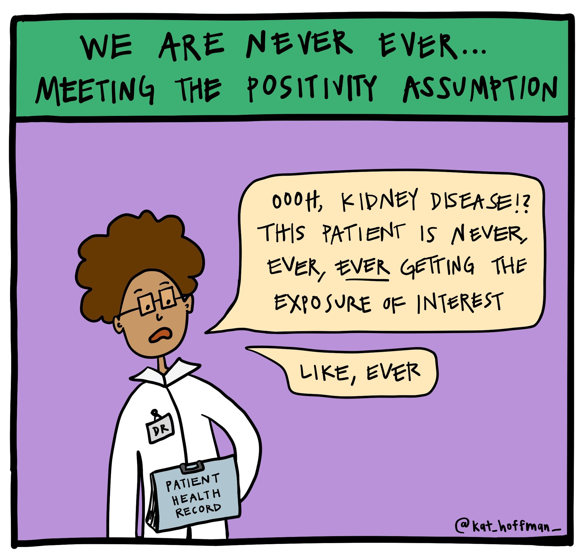

Table of contents
TLDR
- Modified Treatment Policies are a collection of methods for defining and operationalizing interesting causal inference questions.
- The unifying theme in this collection of methods is that they allow us to study hypothetical interventions, or treatment policies, that are extremely flexible.
- This flexibility enables us to answer more realistic scientific questions in both cross-sectional and longitudinal settings, with multivariate, categorical, or continuous exposures.
An Overview of Existing Methodology
Let’s review causal inference at a high level.
{kind=link}
Most modern causal inference methods utilize the potential outcomes framework, which asks questions of what would happen in a hypothetical world in which we could manipulate exposures and then compare outcomes for the same observations under different exposures.
Questions with binary exposures typically take the form, “what would happen if everyone had received the exposure compared to if no one had received the exposure?” Similarly, questions with multi-level or continuous exposures often take the form “what would happen if everyone had received this much of the exposure, versus if everyone had received that much of the exposure?” Study designs like this which compare all observations under two (or more) specific levels of exposure are called static interventions.
Static interventions are a common approach in causal inference, but a few problems frequently arise.
Problem #1: Positivity Violations
A key requirement for causal inference is the positivity assumption. This means if you are comparing two exposures (say, treatments A vs. B), for every covariate combination in your dataset, there must be individuals who sometimes get treatment A and sometimes get treatment B. Intuitively, this ensures there is enough “experimentation” in the dataset that effects can be estimated.
{kind=link}
As you can imagine, this often does not hold true. Sometimes there are theoretical positivity violations: for example, if we are studying the effects of a drug for heart disease, cardiologists might say this drug is never given to people who also have chronic kidney disease because the drug damages the kidneys. The probability of a patient receiving the drug conditional on having kidney disease will be zero in all datasets.
Other times we see practical positivity violations, meaning that due to small sample size and/or random chance, there are certain covariate combinations in which few observations receive the treatment of interest in our dataset. Perhaps in a dataset to study the previous example’s heart disease drug, due to random chance, there are no women aged 40-60 years who received the drug in the data. It is not a theoretical positivity violation (i.e. doctors would give the drug to women in this age group), but it is a practical violation nonetheless as it yields small or zero treatment probabilities.
Positivity issues must be addressed, preferably in the planning stage of a study.
Problem #2: Unrealistic Interventions
A second problem arises with static interventions: there are many situations in which it is not realistic to set everyone’s hypothetical exposure to the same value. Let’s take an example where we are studying the effect of physical activity. A static intervention approach might ask, “what would happen if everyone exercised 30 minutes a week?” Yet there is no actual intervention we could translate to the real world to make everyone exercise 30 minutes a week, i.e. there is no policy a decision-maker could enact to make this happen, even approximately. We could estimate an outcome under this policy, but this unrealistic intervention will likely have a meaningless result.
Notably, you can have an unrealistic intervention without having a positivity violation. For example, we may have access to a large data set with people of all possible covariate combinations who exercise 30 minutes a week; however, it is still scientifically not meaningful or realistic to evaluate a world in which everyone exercises the exact same amount of time.
One possible solution to the problems posed by Static Interventions is Dynamic Interventions.
Dynamic treatment policies or interventions ask what would have happened in a hypothetical world where exposure is assigned based on each observation’s covariate history.
For example, let’s say we want to study the effect of pollution on asthma attacks in the United States. A simple study design could be to find a representative sample of individuals living with asthma, measure their pollution exposure via the Air Quality Index (AQI) on one calendar day (along with other confounders), and record whether an asthma attack occurs within a specified time frame.
Although I don’t study pollution, I know it is scientifically impossible for everyone in the US to receive the same air quality exposure, even in a world with countless environmental regulations. Natural and geographical forces such as wind, wildfires, elevation, proximity to the ocean, etc. make it unrealistic to study a single air quality exposure value for everyone.
We can try getting around these issues by evaluating a dynamic intervention that depends on baseline characteristics of the person or environment. For example, “if a person lives in an urban area, make their AQI exposure 40, and if a person lives in a residential area, make their AQI exposure 20.”
This intervention may reduce positivity violations and lead to a more realistic study, yet there are many other interesting questions about air pollution we still cannot answer with dynamic treatment policies.
Problem #3: Static and dynamic interventions cannot depend on the observed exposure
Another key limitation with both static and dynamic interventions is that the hypothetical exposure value is completely determined by each observation’s baseline characteristics rather than the observed exposure. However, there are many interesting scientific questions about interventions that depend on the actual exposure received. For example, a more relevant question for our pollution example could be, “what would have happened in a hypothetical world where everyone’s AQI exposure was 10% lower than what we observed?” Or, “what if the reduction had been 20 units for individuals living in an area with a daily AQI > 100?”
What questions, or hypothetical interventions, would we propose if we did not feel limited by statistical methodology?
Modified Treatment Policies (MTPs)
We can solve all three problems mentioned above with Modified Treatment Policies (MTPs). MTPs describe hypothetical interventions which depend on the observed value of treatment, possibly in addition to baseline characteristics. We already mentioned two potential MTPs for our pollution example: “what if we reduced everyone’s AQI exposure by 20%?” and “what if we reduced individuals living in an area with a daily AQI > 100 by 20 units?”
Other interesting MTPs unrelated to pollution might be questions along the lines of:
{kind=link}
- How would recovery rates change if we decreased surgery times for surgeries lasting longer than four hours?
- How would diabetes incidence rates change if everyone with a Body Mass Index (BMI) >30 lowered their BMI by 2 units?
- How would medical school admission rates change if all students with MCAT scores less than 500 increased their score by 5 points?
MTPs are an excellent solution for getting around positivity issues to analyze more feasible and realistic interventions. Hopefully this list inspires you to think of MTPs relevant to your own field of study!
A general and unifying framework extending to longitudinal settings
MTPs for cross-sectional, or point-treatment, studies have actually been generalized to exposures and covariates measured at multiple time points, i.e. longitudinal studies. We will refer to this generalization as Longitudinal Modified Treatment Policies (LMTPs), for which there is a corresponding R package called lmtp.
Longitudinal data analysis complexities
Longitudinal studies pose certain crucial and often-overlooked issues, most notably time-dependent confounders. Time-dependent confounders are variables which change over time, affect the likelihood of both future exposure and the outcome, and are affected by previous exposure.
A key time-dependent confounder for the relationship between pollution and asthma attacks could be weather. Hot, humid air causes air quality to decrease, and it also aggravates pulmonary conditions like asthma. I will explain time-dependent confounders more in later posts of this series, but for now, note that LMTP (the method and R package) properly accommodates time-dependent confounders.
LMTP methodology and software capabilities
This LMTP methodology and lmtp software allows the user to handle:
- Cross-sectional or longitudinal exposures
- Binary, categorical, or continuous exposures
- Exposures that are dependent on time, i.e. delaying the occurrence of the exposure as an intervention
- Multiple exposures
- Binary, continuous, or time-to-event outcomes
- Informative loss to follow-up/censoring
- Competing risks
- Survey weights
This could translate to longitudinal research questions such as:
- How would asthma rates change if we reduced two pollutants (fine particulate matter and ozone) by 10% every day for a year?
- How would drug overdose numbers change if Naloxone access laws were implemented one year later?
- How would length of intubation for intubated COVID-19 patients change if patients who never received steroids were given a standard dose of steroids upon intubation? (Death of other causes is a competing risk and discharge is an informative loss to follow up.)
Resources to learn more
Future posts will walk through examples of applications like these using the R package lmtp. In the meantime, a recent summary of the literature is described in Nonparametric Causal Effects Based on Longitudinal Modified Treatment Policies by Díaz et al. Although the Díaz paper and accompanying R package are new, LMTP is an extension of causal inference concepts, methodology, and software that are well-established and steadily becoming more widely used.
Here are several other resources I found useful in writing this post:
- Nick Williams’ (author of the
lmtppackage) blog post introducing MTPs and usinglmtpfor an example with LSAT scores and law school admission rates. - What If by Miguel Hernán and James Robins, a freely available book, has an entire section on longitudinal data and time-dependent confounding (see Part III, Chapters 19-21).
- Effects of multiple interventions. is a section in the book Comparative quantification of health risks: global and regional burden of disease attributable to selected major risk factors by Robins et al. which brings up many of the issues which are later solved by MTPs.
- Estimation of the effect of interventions that modify the received treatment by Haneuse and Rotnitzky and Population intervention causal effects based on stochastic interventions by Diaz and van der Laan both describe the problem well, contain helpful examples, and make advances in the methodology for MTPs.
- Identification, Estimation and Approximation of Risk under Interventions that Depend on the Natural Value of Treatment Using Observational Data by Young et. al (2014) is a publicly available paper that also provides a good summary of the literature and fundamental progress to the methods of MTPs (in this paper they are “interventions which depend on the natural value of treatment”).
As with all my posts, I welcome feedback from my intended audience and/or experts of causal inference. I am also open to suggestions of other resources to include in the reference section. Check back later for posts walking through specific examples and R code!